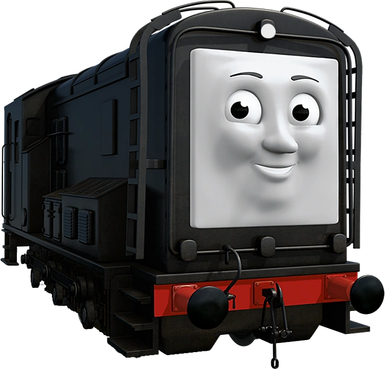

Everything I've Learned About People, I've Learned From Thomas...
Discover your inner train personality based on how you handle various situations!
Your browser does not support the video tag.
What would Thomas the Tank Engine say?
Your Train Personality Is:
